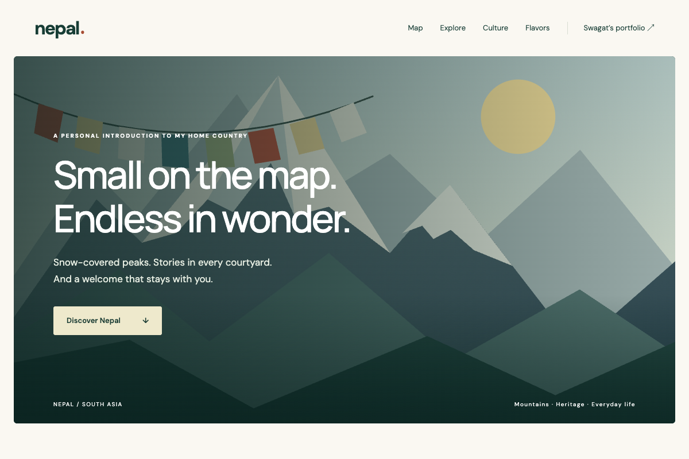

PROJECT NOTES / NEPAL
Nepal, reimagined.
An early coursework page becomes an interactive introduction to a home country.

See the original coursework page

The original screenshot preserves where the project started.
The problem
Turn a static introduction to Nepal into a page that invites exploration while preserving its connection to the original coursework.
The approach
The project combines original SVG and CSS illustrations with a responsive layout. Category filters help visitors choose between nature and heritage, while an interactive overview connects places to short descriptions.
The challenge
Keep information available even without JavaScript, and make visual interactions work with a keyboard. Place details remain ordinary page sections; JavaScript enhances the map selection and filter controls.
The outcome
The page now includes four illustrated place cards, a place explorer, culture and food sections, and direct navigation back to the portfolio.
Scope & next steps
This is an educational introduction, not a travel-planning service. The map is schematic, and personal photography and first-hand stories will add depth when available.